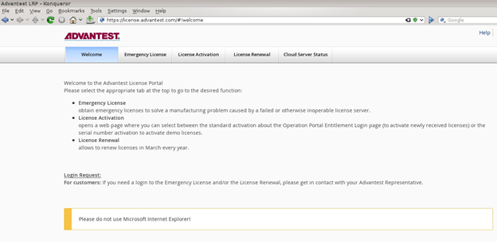
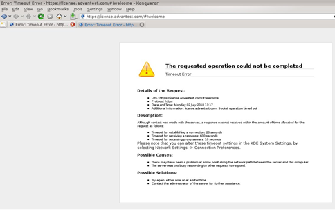

FlexNet Embedded license server setup
FlexNet Embedded license servers are implemented to provide activated licenses to SmarTest system controllers.
Introduction
Installing a FlexNet Embedded license server able to provide the activated licenses requires three steps:
- Installation of the license server software on the host system
- License server registration
- License activation
The FNE license server, when installed in conjunction with the FNP2FNE proxy, can manage both FNE and FNP licenses for all supported SmarTest versions (SmarTest 5, 6, 7 and 8), and includes new features such as self-rehosting for SmarTest 5, 6 and 7 (FNP) license servers.
Prerequisites
Make sure that the system hosting the FlexNet Embedded license server meets the following Prerequisites:
Hardware minimum configuration:
- Quad core CPU
- 8 GB RAM
- 12 GB free hard disc space FNE, plus 12GB for FNX/FNP if used.
Operating system minimum configuration:
- Red Hat Linux 7.2
- Root access
- Ports 7070 and 7077 may not be used by other applications.
If FNX is installed, ports 27000 and 27020 may not be used by other applications.
- Java 8
- License server must use fully qualified hostname (command hostname -f must not return localhost)
Checking the availability of ports 7070 and 7077
Ports 7070 and 7077 must not be in use by other applications.
To check this, enter in the bash shell (if you use ksh, you can open a bash shell with enter /bin/bash on the command line):
&> /dev/null < /dev/tcp/localhost/7070 && echo INUSE
&> /dev/null < /dev/tcp/localhost/7070 && echo INUSE
In addition, if FNX is used for FNP license management, ports 27000 and 27020 must not be in use by other applications.
To check this, enter in the bash shell (if you use ksh, you can open a bash shell with enter /bin/bash on the command line):
&> /dev/null < /dev/tcp/localhost/27000 && echo INUSE
&> /dev/null < /dev/tcp/localhost/27020 && echo INUSE
If no response message is displayed, the port is not in use.
If the response INUSE is displayed, the port is in use.
If port any of these ports are in use, either use a different server to host the FNE license server or get in contact with your administrators (customer IT) to identify the application and remove it from the server to be used for the FNE license server.
Checking the availability of port 443
If your FNE license server is to have an online connection to the Advantest Licensing Back-Office, you need a connection to the internet for outgoing connections (FROM the license server to the internet). To check if access is available before you install the FNE license server.
Do the following to check if port 443 is open on your FNE license server:
- Open a browser.
- Enter the URL: https://license.advantest.com/.
If the port 443 is open, the Advantest License Portal Welcome page is displayed:

If port 443 is not open, an error message page is displayed informing of a timeout or failure to connect to the requested page, for example:

- If you require an internet connection to the Advantest Licensing Back-Office, get in contact with your administrators (customer IT) and request that port 443 is opened.
Checking the date and time settings
It is important to have the correct date and time set on the workstations and license servers. The Network Time Protocol (NTP) can be used to synchronize the clocks of computers with a reference time source over a network. For details on how to synchronize the date and time settings using NTP, see Network time protocol configuration.
Network configuration
For a license server to start, the server workstation must be set up for networking.
For a local license server installed on the system controller that is not connected to a network, a few prerequisites must be considered. The system controller must have a Fully Qualified Domaine Name (FQDN). As a result, the /etc/hosts file must have an entry of the form:
ip address hostname.domainname hostname
For example: 192.168.0.15 server123.mycompany.com ws123
For more details about setting hostnames, see Setting the host name of a system controller running RHEL 7.
Next steps
If the prerequisites are met, start the installation of the FNE license server as described in the appropriate topic:
Functional changes
- Introduced in SmarTest 8.1.4
- SmarTest 8.2.1: Port checking information added.